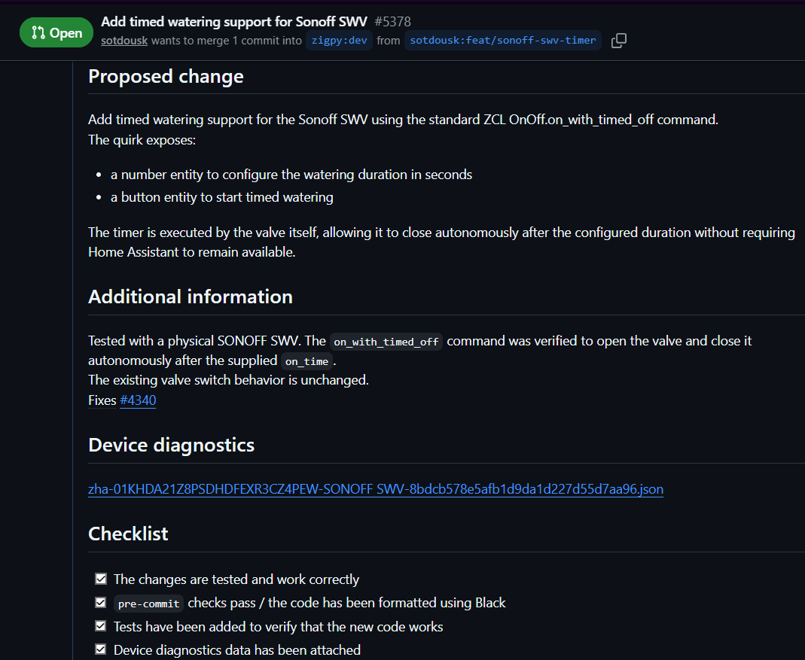

Open PR · Upstream Review
Open-Source Development for Home Assistant
SONOFF SWV · Zigbee / ZHA
Contributing to the Home Assistant open-source ecosystem through device integration development. Current work adds timed watering support for the SONOFF SWV Zigbee irrigation valve, using device-side timing to allow autonomous valve operation without requiring Home Assistant to remain available.
The contribution includes new Home Assistant entities, Zigbee command handling, testing with physical hardware, automated tests and project quality checks.